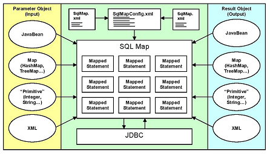

본 장에서는 iBATIS의 개념과 특징, 다운로드 및 사용 방법에 대해 살펴본다.
iBATIS란?
iBATIS란 프로그래머가 DB를 보다 편리하게 핸들링 할 수 있게 해주는 ORM(Object Relational Mapping) 프레임워크로서 DB 테이블과 JAVA 객체와의 관계를 mapping시켜 persistence logic 처리를 도와주는 역할을 한다. 즉, iBATIS를 이용하면 DB의 테이블과 JavaBean을 mapping(SqlMap XML파일)시켜 DB에 CRUD(생성, 조회, 수정, 삭제) 작업을 쉽게 할 수 있다.
기존의 JDBC를 이용하여 프로그래밍하는 방식은 프로그램 소스 안에 SQL문을 작성하였지만, iBATIS를 이용하면 SQL문을 프로그램에서 분리하여 XML 파일에 별도로 작성한다. 따라서 프로그래머가 기존의 JDBC를 사용할 때 보다 프로그래밍하는 부담이 줄어들게 된다. 뿐만 아니라 SQL을 변경하고자 할 경우 기존처럼 프로그램을 수정하는 것이 아니라 XML 파일의 SQL문 만을 변경하면 되기 때문에 SQL 변환이 자유롭다는 특징이 있다.
다음은 iBATIS에서 xml(SqlMap.xml)로 작성된 SQL을 DB와 어떻게 통신하는지를 간단히 보여주는 그림이다.

사용자는 CRUD에 대한 각각의 SQL문은 SqlMap XML 파일에 작성하고 이 파일들을 SqlMapConfig XML 파일에 작성하면 iBATIS API를 통해 자동으로 Mapping된 Statement 객체들을 생성하여 이를 통해 DB에 SQL문을 실행하게 된다.
iBATIS의 보다 자세한 아키텍처는 다음의 사이트를 참고하면 된다.
[http://ibatis.apache.org]
iBATIS 다운로드
iBATIS를 사용하기 위해서 iBATIS 관련 jar 파일이 필요하다. 이 jar 파일은 http://ibatis.apache.org/java.cgi 사이트에서 다운로드 받을 수 있다. 다운로드 받은 파일의 압축을 풀면 압축 푼 디렉토리 안의 lib 디렉토리에 jar 파일이 존재하는데 이 jar 파일을 이용하여 iBATIS와 연동하면 된다. 만약, iBATIS 패키지가 ibatis-2.3.4.726.zip 이라면 압축을 푼 디렉토리의 lib 디렉토리에 ibatis-2.3.4.726.jar 파일이 한다.
기존 iBATIS 버전에서는 ibatis-comm.jar, ibatis-sqlmap.jar 파일들이 필요했지만, iBATIS 2.3.4 버전에서는 ibatis-comm.jar 파일과 ibatis-sqlmap.jar 파일이 ibatis-2.3.4.x.jar 파일로 통합되었다. 본 문서에서는 ibatis-2.3.4.726.jar 를 사용하였다.
{kind=link}